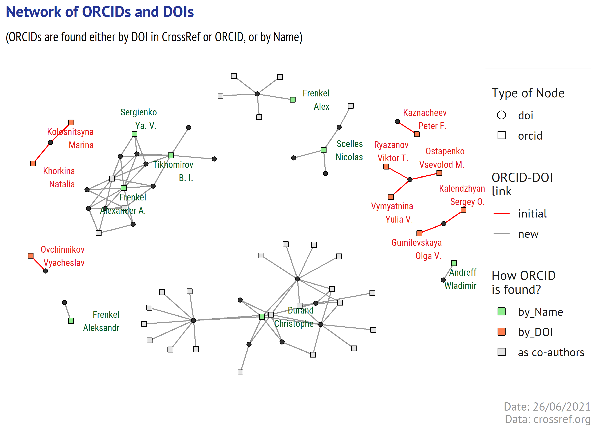
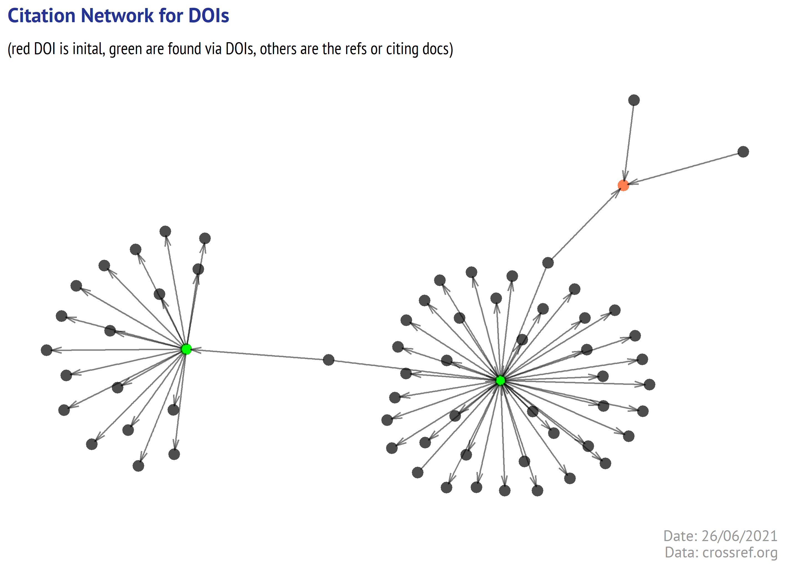

What if the journal ignored ORCID for years? Is there a simple way to collect their ORCIDs except emailing’em with gentle reminders? In this post I exploit the ways to collect ORCIDs for the authors of already published articles using the open sources (CrossRef, Microsoft Academic, ORCID). Writing it was an unusually long journey, as I had to figth inconsistencies and revise the approaches. An initial share of ORCIDs in CrossRef for the authors of selected articles was 10%. It was raised to 32% with just algorithm-based approach and further was improved to 64% after additional manual check-up of the automatically pre-selected candidates. This is another long post about the scholarly articles, metadata quality, blessed open APIs, and utility of R packages.
Assume that you have just agreed to manage a scientific journal and among many ideas there is one where the journal data is available in Wikidata (and all the world is using Scholia to see its impact (like here)). And then you find out that the internal database contains incomplete metadata, patchy for some years, so literally the only reliable data you have are… just DOIs.
A journey to Wikidata will be long (and dangerous, yes!). This post is the first part of it - we will try to utilize the open academic services to update the author metadata and prepare it for Wikidata (which may happen in the next parts).
In this post I will use as an example the randomly selected articles from the journal Economic Policy (ISSN: 1994-5124) published in 2016-2020. I claim that the context above about the manager and patchy data is made up for the context and has nothing to do with the selected journal. I am not a manager of it, nor am I planning to become anyhow related to it. So no allegations towards the journal selected as an example and quality of their editorial work - the context is made up, the other things, down the road, will be real.
I randonly selected 10 DOIs from the journal Economic Policy (ISSN: 1994-5124) published in 2016-2020.
data <- tibble(
doi = c("10.18288/1994-5124-2020-3-134-151", "10.18288/1994-5124-2018-4-02",
"10.18288/1994-5124-2016-5-06", "10.18288/1994-5124-2020-3-74-105",
"10.18288/1994-5124-2015-5-07", "10.18288/1994-5124-2016-5-09",
"10.18288/1994-5124-2017-6-08", "10.18288/1994-5124-2016-3-06",
"10.18288/1994-5124-2015-3-02", "10.18288/1994-5124-2016-5-10")
)
DT::datatable(data, rownames = F,
options = list(dom = "tp", deferRender = TRUE,
ordering = TRUE, autoWidth = FALSE,
scrollX = F))
Our next step is, of course, to download the article’s metadata from CrossRef.
I expect that some of the readers may question - how come is that the metadata submitted to CrossRef is not available in the editorial office.
This requires a separate remark - in Russia there are many scientific journals that are still published by the state organizations, not by the commercial publishers. One may think that this is cool because (1) the commercial services provided by the third parties decrease the profit, which is an endangered species in academic publishing; (2) open software as PKP OJS and new formats (like overlayed journals, where SIGMA is a bright example) should allow to cut the costs. The problem is that the state organizations are under constant budget optimization processes and subject to “some” regulations. As a result, the optimized editorial teams often have to request layout/pre-press services from external suppliers (selected each year through a tender process). In addition to those services, the external suppliers who work on layout, are also often asked to pay an annual fee to CrossRef, and to upload the metadata (the university’s procurement department and legal services will eat the guts of anyone who ask them to pay few hundred bucks without a proper agreement in Russian with Russian arbitrary law and penalties delays…). And as the organs weaken, if not regularly used, some editorial teams nowadays have no a person knowing how to upload/edit CrossRef metadata. I hope this explain that a described situation is not fully made up, it is quite often met in Russia. (NB! This explanation does not relate to the selected journal - I have not checked who they paid for what and what they do themselves).
For simple queries to CrossRef I am using rcrossref package. Please mind the API etiquette and set your email into R.environment with the following steps:
# as always I download the data into file once and
# do not repeat it again when re-knitting
crossref_data_file <- paste0(dir,"/crossref.RDS")
if(!file.exists(crossref_data_file)){
crossref_data <- map(data$doi, ~cr_works(.x))
write_rds(crossref_data, crossref_data_file)
} else {
crossref_data <- read_rds(crossref_data_file)
}
As this post is only about the author information, I take only the author info and convert it a bit.
crf_author_data <- crossref_data %>%
map("data") %>% map_df(~.x) %>%
select(any_of(c("doi", "author", "ORCID"))) %>%
unnest(author, keep_empty = TRUE) %>%
mutate(ORCID = gsub("http://orcid.org/","",ORCID))
crf1 <- crf_author_data %>%
filter(!is.na(family)) %>%
group_by(doi) %>%
# adding author order
mutate(ord = as.character(row_number())) %>%
ungroup() %>%
select(doi, family, given, ord, orcid = ORCID)
crf2 <- crf_author_data %>%
unite(col = "org_name",
c("affiliation.name", "name"), na.rm = TRUE) %>%
filter(!org_name=="") %>%
group_by(doi) %>%
mutate(ord = as.character(row_number())) %>%
ungroup() %>%
select(doi, org_name, ord)
crf_data <- data %>% left_join(crf1) %>% left_join(crf2)
crf_data %>%
DT::datatable(rownames = FALSE, escape = FALSE, class = 'compact striped',
caption = htmltools::tags$caption(
style = 'caption-side: bottom;
text-align: left; font-size: 80%;
color: #969696; font-family: Roboto Condensed;',
'Data: crossref.org (see in the text).'),
options = list(searchHighlight = TRUE, dom = 'Bfrtip',
columnDefs = list(
list(width = '150px', targets = c(0,4)),
list(width = '350px', targets = c(5)),
list(className = 'dt-center', targets = c(3)))
))
First results here:
author and affiliation details in CrossRef (for these articles) are not bad, the author names are present in consistent format
9 out of 10 articles have the affiliation strings
3 out of 28 authors have ORCIDs.
Not too many ORCIDs are registered in CrossRef, so naturally we would like to find more. We can try to seek the persons in ORCID, but before doing that it would be helpful to get also the author names in Cyrillic, as many Russian researchers register in ORCID under its name in Cyrillic. As this journal’s orginal version is published in Russian, I would start searching the Cyrillic names in Microsoft Academic (will be missed).
The service indexes many Russian journals with the original Cyrillic names. I will use its API and microdemic package to query the author and affiliation info for each DOI.
The code below is longer than expected because in Cyrillic format a family name is placed first, followed by a given name and further by patronymic, while in Latin format a given name is succeeded by a family name. I needed to match the Cyrillic and Latin name variants to use them both for querying ORCID, therefore I put additional transformations into the code below.
I detected the language with a regular expression [\\p{Letter}--\\p{script=latin}]+
I extracted the family and given names using the regular expressions (depending on whether the author info is in Cyrillic or Latin format).
I hoped that this would be enough and I could match the authors by their position in the list of the authors. And I found out that an order can be different in Russian and English versions of the same article (a real case in our selected articles). And as we need to match the author names in Latin and Cyrillic spelling, I transliterated the Cyrillic names from Microsoft Academic and re-ordered the them according to the order in CrossRef. For transliteration from Cyrillic to Latin I used my own function (gist).
mag_data_file <- paste0(dir,"/mag.RDS")
if(!file.exists(mag_data_file)){
mag_data <- map_df(data$doi,
~ ma_evaluate(query = paste0("DOI=\'", .x, "\'"),
atts = c('DOI', 'AA.AuN', 'AA.AuId', 'AA.AfN', 'AA.AfId')))
mag_data_details <- mag_data %>% unnest_wider(AA) %>%
unnest(cols = c(AuN, AuId, AfN, AfId)) %>%
group_by(DOI) %>% mutate(ord = as.character(row_number())) %>% ungroup() %>%
select(-logprob, -prob) %>% rename(doi = DOI) %>%
mutate(AuN = str_to_title(AuN)) %>%
mutate(rus_lang = ifelse(str_detect(AuN, "[\\p{Letter}--\\p{script=latin}]+"),
TRUE, FALSE)) %>%
mutate(mag_family = ifelse(rus_lang,
str_extract(AuN, "^[^\\s]+"),
str_extract(AuN, "(?<= )[^\\s]+$")),
mag_given = ifelse(rus_lang,
str_extract(AuN, "(?<= )[^\\s]+(?= )"),
str_extract(AuN, "^[^\\s]+")))
# transliterator function is available as a gist
# https://gist.github.com/alexeilutay/3c784476f47a61c74752609e2f9b564f/raw/6d780af44452bb5d0be714738e46ca3bb09f69c2/transliterator.R
source(paste0(onedrive, "/rscripts/Rscripts/TranslitRusEng.R"), encoding = "UTF-8")
mag_data_details <- mag_data_details %>%
mutate(mag_family = enc2native(mag_family)) %>%
mutate(tr_mag_family = map_chr(mag_family, translit2))
## re-ordering
for (s in 1:nrow(mag_data_details)){
acr <- crf_data %>% filter(doi == mag_data_details$doi[s])
pos <- which.max(stringsim(mag_data_details$tr_mag_family[s], acr$family))
mag_data_details[s, "ord"] <- acr$ord[pos]
}
write_rds(mag_data_details, mag_data_file)
} else {
mag_data_details <- read_rds(mag_data_file)
}
crf_mag_data <- crf_data %>% left_join(mag_data_details)
crf_mag_data %>%
DT::datatable(rownames = FALSE, escape = FALSE, class = 'compact striped',
caption = htmltools::tags$caption(
style = 'caption-side: bottom; text-align: left; font-size: 80%;
color: #969696; font-family: Roboto Condensed;',
'Data: crossref.org; academic.microsoft.com (see in the text).'),
options = list(searchHighlight = TRUE, dom = 'Bfrtip',
columnDefs = list(
list(width = '150px', targets = c(0,4)),
list(width = '350px', targets = c(5)),
list(className = 'dt-center', targets = c(3,4)))
))
If you page the table to the row 6 and scroll a bit to the right, you will see the names in Cyrillic.
There are some other sources that can be used for name extraction:
full texts: CrossRef often provides the URLs for text-data mining, if not you can use fulltext and roadoi packages to find the full text. Don’t forget to check at CORE. And just recently a new package doilinker was released with an R implementation of the linking approach described in Cabanac G, Oikonomidi T, Boutron I. Day-to-day discovery of preprint-publication links. Scientometrics. 2021; 1–20. DOI: 10.1007/s11192-021-03900-7.
indexing services: well, Scopus/Web of Science can be very helpful, but the providers limit a scope of possible using. I haven’t checked with them, but I do not think that using those services for amelioration of the open data (e.g. Wikidata) would a use case favored by commercial data providers. I am wrong in thinking so, the better.
open A&I databases: Lens is cool in many ways. For example, they already matched the articles to ORCID dataset, you can see the ORCID of the authors even if it is not present in CrossRef (here is an example: no ORCID in CrossRef, no ORCID in Microsoft Academic, ORCID is present in The Lens, apparently matched via DOI present in the author’s ORCID profile). But… ORCID is not present in the Lens export, although the creators told me that this is a possible development, so they will look how soon this can be integrated.
Russian indexing services are few and not quite friendly to parsing - eLibrary blocks the user by IP after a dozen of GET requests (my own experience), Cyberleninka can choke to death with the ads (until paid ~1.5 USD monthly rent), and explicitly prohibits any use of parsers or harvesters. In some countries “open” still means being “available via web UI”. And yet Cyberleninka deserves a good word - they pass(-ed?/-es?) their contents to OpenAIRE.
OpenAIRE provides few APIs. You can either obtain a personal token or make unauthorized queries at lower rate, and get the results in XML/JSON/CSV formats (query should look like api.openaire.eu/search/publications?doi={DOI}&format=json). There is an R package ropenaire, but as it was updated 3 years ago, I did not use it and queried OpenAIRE with unauthorized GET requests to use JSON output.
Let’s look at what author details we can get from OpenAIRE.
openaire_file <- paste0(dir,"openaire.RDS")
if(!file.exists(openaire_file)){
oa_data <- data$doi %>%
map(~paste0("http://api.openaire.eu/search/publications?doi=", .x,
"&format=json") %>%
jsonlite::fromJSON()
) %>%
map(pluck, "response", "results", "result", "metadata",
"oaf:entity", "oaf:result")
write_rds(oa_data, openaire_file)
} else {
oa_data <- read_rds(openaire_file)
}
# the author info
oa_authors <- oa_data %>% map(pluck,"creator") %>%
map_if(is_list, ~flatten_df(.x)) %>%
map_df(~.x)
oa_authors %>%
DT::datatable(rownames = FALSE, escape = FALSE,
class = 'compact striped',
caption = htmltools::tags$caption(
style = 'caption-side: bottom; text-align: left; font-size: 80%;
color: #969696; font-family: Roboto Condensed;',
'Data: openaire.eu (see in the text).'),
options = list(searchHighlight = TRUE, dom = 'Bfrtip',
columnDefs = list(
list(width = '200px', targets = c(1,2, 5,6)),
list(className = 'dt-center', targets = c(0)))
))
Searching 10 DOIs in OpenAIRE retrieved 8 ORCIDs - 3 of which are the same as found in CrossRef (see the tables above) and placed in a column @orcid_pending. The other 5 ORCIDs is a result of OpenAIRE matching procedures.
But also.. the researchers’ names are present in 3 different formats and mixed with the organizations in one column. Not cool, of course.
If Lens and OpenAIRE could match ORCIDs, it is very likely that we also can do this.
ORCID API allows to do search by many parameters by DOI.
The code below shows 3 functions that will be my helpers in communication with rorcid.
## function 1 - search ORCIDs by query
get_orcid_by_doi <- function(query_doi){
orcid_doi(query_doi, rows = 10) %>% map_df(~.x) %>% mutate(doi = query_doi)
}
## function 2 - extract author details by ORCID
orcid_author_details <- function(orcid_ID){
xx <- orcid_id(orcid_ID)
a1 <- map(xx,"name") %>%
unlist() %>% enframe() %>%
filter(!grepl("-date", name)) %>%
mutate(name = gsub("\\.value$", "", name)) %>%
mutate(name = str_extract(name, "(?<=\\.)[^\\.]+$")) %>%
mutate_all(~as.character(.))
a2 <- map(xx, "external-identifiers") %>%
map_df("external-identifier")
if(exists("external-id-type", a2)){
a2 <- a2 %>%
select(name = `external-id-type`,
value = `external-id-value`) %>%
mutate_all(~as.character(.))
} else {a2 <- tibble()}
xy <- orcid_employments(orcid_ID)
a3 <- map(xy, "affiliation-group") %>%
map_df("summaries") %>%
unlist() %>% enframe() %>%
mutate_all(~as.character(.))
if(nrow(a3)>0){
a3 <- a3 %>% filter(grepl("organization", name))
}
if(nrow(a3)>0){
a3 <- a3 %>%
mutate(name = str_extract(name, "(?<=\\.)[^\\.]+$")) %>%
mutate(orcid = orcid_ID)
}
output <- bind_rows(a1, a2, a3) %>% mutate(orcid = orcid_ID)
return(output)
}
## function 3 - group author details by ORCID
orcid_author_details_group <- function(orcid_author_details_data){
orcid_author_details_data %>%
distinct() %>%
mutate(name = gsub("\\d+$","", name)) %>%
group_by(doi, orcid, name) %>%
summarize(values = paste(unique(na.omit(value)), collapse = " | ")) %>%
ungroup() %>%
pivot_wider(names_from = name, values_from = values) %>%
select(any_of(c("doi", "orcid", "orcid_family_name" = "family-name",
"orcid_given_name" = "given-names",
"ResearcherID", "Scopus_AuthID" = "Scopus Author ID",
"orgname" = "name", "city", "country",
"orgID" = "disambiguated-organization-identifier",
"orgID_type" = "disambiguation-source")))
}
And now we query the ORCID API using DOIs. It could be as simple as it sounds, but it is not. For 1 author the family and given names in ORCID are swapped. Therefore, I use stringdist package to fuzzy match the authors’ family names (as present in CrossRef) against both family and given names retrieved from ORCID. In a table below you may filter with 10.18288/1994-5124-2015-5-07 to see the record in question.
orcid_doi_file <- paste0(dir, "orcid_doi_data.RDS")
if(!file.exists(orcid_doi_file)){
orcid_by_doi_data <- data$doi %>% map_df(~get_orcid_by_doi(.x)) %>%
select(doi, orcid = contains("path"))
if(exists("orcid", crf_data)){
orcid_by_doi_data <- orcid_by_doi_data %>%
bind_rows(crf_data[,c("doi", "orcid")] %>% na.omit()) %>%
distinct()
}
orcid_by_doi_details <- orcid_by_doi_data$orcid %>%
map_df(~orcid_author_details(.x)) %>%
left_join(orcid_by_doi_data, .) %>%
orcid_author_details_group()
orcid_by_doi_details %>% write_rds(orcid_doi_file)
} else {
orcid_by_doi_details <- read_rds(orcid_doi_file)
}
data2 <- crf_mag_data %>% select(-orcid) %>%
left_join(orcid_by_doi_details) %>%
mutate(sim1 = sapply(stringsim(tolower(family),
tolower(orcid_family_name)),
function(x) x)) %>%
mutate(sim2 = sapply(stringsim(tolower(family),
tolower(orcid_given_name)),
function(x) x)) %>%
mutate(dec1 = case_when(
sim1>0.75 | sim2 > 0.75 ~ "keep",
TRUE ~ "remove")
) %>%
filter(dec1 == "keep")
crf_mag_orc_data <- crf_mag_data %>% select(-orcid) %>%
left_join(data2) %>%
select(-sim1, -sim2, -dec1)
data2 %>% mutate_at(c("sim1", "sim2"), ~round(.x,2)) %>%
datatable(rownames = FALSE, escape = FALSE,
editable = TRUE, class = 'compact striped',
caption = htmltools::tags$caption(style = 'caption-side: bottom;
text-align: left; font-size: 80%; color: #969696; font-family: Roboto Condensed;',
'Data: see in the text.'),
extensions = 'Buttons',
options = list(searchHighlight = TRUE,
dom = 'Bfrtip', buttons = c('csv', "excel"),
columnDefs = list(
list(width = '150px', targets = c(0,13)),
list(width = '350px', targets = c(4,18)),
# list(width = '65px', targets = c(1,2)),
list(className = 'dt-center', targets = c(2)))
)
)
Our result: in addition to 3 ORCIDs found in CrossRef, our searching in ORCID by DOI helped to retrieve another 6 ORCIDs (including all those found in OpenAIRE. Searching in OpenAIRE could be skipped).
But 9 ORCIDs for 28 authors are also few. I guess that for the articles published in some high-brow international venues - those requiring to provide ORCIDs for each author - a proportion could be substantially higher. But this is no more, no less, but an economic journal from Russia.
Now, at last, we can utilize the names in Cyrillic that we earlier found in Microsoft Academic.
I made few additional steps:
created the proper family and given names (i.e. removed the initials).
linked the authors’ order (in the list of authors) to the DOI - this will help me to match the new results to the original records further.
For 19 authors not having ORCIDs we combined the family names in Latin and Cyrillic - overall, 27 name variants and make a queries to ORCID.
xdata <- crf_mag_orc_data %>% filter(is.na(orcid)) %>%
select(doi, ord, cr_family = family,
cr_given = given, cr_affil = org_name,
mag_family, mag_given, mag_affil = AfN) %>%
pivot_longer(-c(1:2)) %>%
separate(col = "name", into = c("source", "variable")) %>%
pivot_wider(names_from = variable, values_from = value) %>%
filter(!is.na(family)) %>%
mutate(given_token = str_extract(given, "^[^\\s]+")) %>%
select(doi, ord, family, given_token, affil) %>%
mutate_at(c("family", "given_token", "affil"),
~str_squish(tolower(.x))) %>%
distinct() %>%
group_by(doi, ord, family, given_token) %>%
summarize(affils = paste(unique(na.omit(affil)),
collapse = " | ")) %>%
ungroup() %>%
unite(col = "doix", c("doi", "ord"), sep = "|")
DT::datatable(xdata, rownames = F,
options = list(dom = "Btip", deferRender = TRUE,
ordering = TRUE, autoWidth = FALSE, scrollX = F))
## another function-helper
get_orcid_by_name <- function(name_family, name_given, query_doi){
orcid_search(family_name = name_family, given_name = name_given, rows = 20) %>%
mutate(doi = query_doi)
}
orcid_name_file <- paste0(dir, "orcid_name_data.RDS")
if(!file.exists(orcid_name_file)){
orcid_by_name_data <- list(name_family = xdata$family,
name_given = xdata$given_token,
query_doi = xdata$doix
) %>%
pmap(get_orcid_by_name) %>%
map_df(~.x)
orcid_by_name_details <- orcid_by_name_data$orcid %>%
map_df(~orcid_author_details(.x)) %>%
left_join(orcid_by_name_data, .) %>%
orcid_author_details_group() %>%
arrange(doi, orcid_family_name) %>%
separate(col = doi, into = c("doi", "ord"), sep = "\\|")
orcid_by_name_details %>% write_rds(orcid_name_file)
} else {
orcid_by_name_details <- read_rds(orcid_name_file)
}
orcid_by_name_details %>%
DT::datatable(rownames = FALSE, escape = FALSE, class = 'compact striped',
caption = htmltools::tags$caption(style = 'caption-side: bottom;
text-align: left; font-size: 80%; color: #969696; font-family: Roboto Condensed;',
'Data: orcid.org (see in the text).'),
extensions = 'Buttons',
options = list(searchHighlight = TRUE,
dom = 'Bfrtip', buttons = c('csv', "excel"),
columnDefs = list(
list(width = '150px', targets = c(0,2,8)),
list(width = '350px', targets = c(7)),
list(className = 'dt-center', targets = c(2)))
)
)
Our efforts brought another 21 ORCIDs. We would certainly get much more ORCIDs, if anyone from our author had a popular family name like Ivanov or Petrov.
Oh, let’s take a pause on Petrov. For some of my readers “Petrov from Russia” may raise an association with a fictional Russian president in House of Cards, or even worse - with a pseudo-tourist whose real name is certainly not Petrov and who is probably sent with a secret task to stain the door handles with some crazy chemical stuff. Even if you live not in a Western part of the world, but in, say, Australia, there was also Petrov who turned out to be fake Petrov (see Wikipedia: Petrov Affair). The Russian Petrovs seem to be sort of demonized, which is not good, so I am going to use this chance and give you few references to other, the real Petrovs. Here you are: (1) Wikipedia: Stanislav Petrov - a guy who saved the Western world from a nuclear war in 1983. Or if you like more sotries about the science and discovery, (2) Wikipedia: Vasily Petrov - a self-taught electrical technician who discovered and described an electric arc. None of Petrovs has asked me about this remark, it was just a pause.
Let’s get back to the ORCIDs that we found by name and need to verify.
In its merged form a table look like below, all found ORCIDs are marked either as “by_doi” or as “by_name”.
final_data <- bind_rows(
## found by doi
crf_mag_orc_data %>% filter(!is.na(orcid)) %>% mutate(cred = "by_doi"),
## found by name
crf_mag_data %>% select(-orcid) %>%
anti_join(data2, by = c("doi", "ord")) %>%
left_join(orcid_by_name_details, by = c("doi", "ord")) %>%
mutate(cred = ifelse(is.na(orcid), NA_character_, "by_name"))
) %>%
distinct() %>%
arrange(doi, ord) %>%
relocate(doi, ord, cred)
final_data %>%
datatable(rownames = FALSE, escape = FALSE,
editable = TRUE, class = 'compact striped',
caption = htmltools::tags$caption(style = 'caption-side: bottom; text-align: left; font-size: 80%; color: #969696; font-family: Roboto Condensed;',
'Data: see in the text.'),
extensions = 'Buttons',
options = list(searchHighlight = TRUE,
dom = 'Bfrtip', buttons = c('csv', "excel"),
columnDefs = list(
list(width = '150px', targets = c(0,14,20)),
list(width = '350px', targets = c(5,19)),
list(width = '65px', targets = c(1,2)),
list(className = 'dt-center', targets = c(2)))
)
)
We have not so many options for checking here - the public details in many profiles are minimal, so automatic checking can hardly be fulfiled. Or can it?
The ways of checking:
we can make our decision by looking at the names and affiliation/employment info - some combinations of the family and given names are rare enough. Provided that there is another matching point (e.g. affiliation), the match can be confirmed. For example, I’ve never heard about anyone with the family name and given name like mine in any organizations I was affiliated. Moreover, in a whole Russia with 100+ mln population, there is no a researcher with such combination of family and given names (according to the national electronic library). This means that to identify me by name among the Russian authors is easy. The found ORCID for Nicolas Scelles shows the same affiliation (University of Stirling) as present in the original article (School of Sport University of Stirling). But can we be sure? Is this him? Is his name is rare enough? I can speak for the Russian names, but my perception of Nicolas Scelles can be misleading.
we can find in CrossRef all the publications associated with the found ORCIDs and select the ORCID having the highest score. The scores can be calculated based on the coauthorship, citation, contextual analysis.
Let’s try (or at least consider these approaches):
If there are 2 co-authors (А and B) for a particular article and we have found 2 ORCIDs for each author name (A1, A2, B1, B2), then we just need to check if there are any other publications where {A1/A2} and {B1/B2} are co-authors.
In our example there are 2 articles (out of selected 10) for which we have 2 or more authors with unconfirmed ORCIDs - overall, 2 articles, 9 authors, 14 found ORCID variants. Of course, we can do the queries checking each ORCID(A)-ORCID(B) pair (https://api.crossref.org/works?filter=orcid:{orcid1},orcid:{orcid2}&mailto={your_email}&rows=10&select=author), which even in our case would require 30+ queries.
Alternatively, we can extract from CrossRef the metadata of all articles where those 14 ORCIDs are present, then build a co-authorship network, and check if any ORCIDs (candidates) are preent together in any other articles. This method has its limits, of course. For the articles in High-Energy Physics with their long author lists it will require a lot of adjustements. But for Russian journal in economics, where most of the authors are Russian (i.e. less ambiguity), the scenario may work.
crossref_data_file2 <- paste0(dir,"crossref_orcids.RDS")
if(!file.exists(crossref_data_file)){
cr_data_4_orcids <- unique_orcids_2_check$orcid %>%
map(~cr_works_(filter=c(orcid=.x),
select = c('DOI', 'author', 'abstract', 'reference'),
limit= 100) %>%
jsonlite::fromJSON(flatten = TRUE)
)
write_rds(cr_data_4_orcids, crossref_data_file2)
} else {
cr_data_4_orcids <- read_rds(crossref_data_file2)
}
cr_data_4_orcids <- cr_data_4_orcids %>%
map_df(~.x %>% map(pluck, "items") %>% map_df(~.x)) %>%
unnest(author) %>%
unite(col = "person", c("family", "given"), sep = ", ") %>%
select(DOI, ORCID, person) %>% distinct() %>% filter(!is.na(ORCID)) %>%
mutate(ORCID = gsub("http://orcid.org/","",ORCID))
DT::datatable(cr_data_4_orcids, rownames = F,
options = list(dom = "Btip", deferRender = TRUE,
ordering = TRUE, autoWidth = FALSE, scrollX = F))
In the table above we can see the ORCID-DOI combinations obtained from CrossRef for 14 ORCIDs. I added to this 9 ORCID-DOI pairs found earlier, and converted this into a network with a help of very convenient igraph and tidygraph packages.
## data for a network
orcid_network_data <- data2 %>%
unite(col = "person", c("family", "given"), sep = ", ") %>%
select(DOI=doi, ORCID=orcid, person) %>%
bind_rows(cr_data_4_orcids) %>%
group_by(ORCID) %>%
mutate(len = nchar(person)) %>%
arrange(-len) %>%
mutate(person = person[1]) %>%
select(-len) %>%
ungroup()
## creating a graph
orcid_network <- orcid_network_data %>%
select(from = ORCID, to = DOI) %>%
graph_from_data_frame(directed = FALSE) %>%
as_tbl_graph() %>%
## setting attributes for edges
activate(edges) %>%
mutate(edge_vers = ifelse(edge_is_incident(which(.N()$name %in% data$doi)),
"initial", "new")) %>%
## setting attributes for nodes
activate(nodes) %>%
mutate(item_type = ifelse(name %in% orcid_network_data$DOI, "doi", "orcid")) %>%
mutate(orcid_type = case_when(
name %in% data2$orcid ~ "by_DOI",
name %in% orcid_by_name_details$orcid ~ "by_Name",
TRUE ~ "as co-authors")
) %>%
mutate(orcid_type = ifelse(orcid_type=="as co-authors" & item_type=="doi",
NA_character_, orcid_type)
) %>%
left_join(orcid_network_data %>%
filter(ORCID %in% data2$orcid|ORCID %in% orcid_by_name_details$orcid) %>%
select(name = ORCID, person) %>% unique())
summary(orcid_network)
IGRAPH 3ef9d06 UN-- 73 92 --
+ attr: name (v/c), item_type (v/c), orcid_type (v/c), person
| (v/c), edge_vers (e/c)This summary output for a graph tells that we have got a graph with 73 nodes and 92 edges, the nodes have 3 attributes (item_type, orcid_type and person) and there is also one edge attribute (edge_vers).
graph_pic <- paste0(getwd(), "/images/graph.png")
if(!file.exists(graph_pic)){
gg <- orcid_network %>% ggraph(layout = "fr") +
geom_edge_link0(aes(color = edge_vers))+
geom_node_point(aes(shape = item_type , fill = orcid_type, size = item_type))+
geom_node_text(aes(label = gsub(",","\n", person), color = orcid_type),
repel = TRUE, size = 2.8, hjust = 1, family = "Roboto Condensed",
point.padding = 0.1, force = 0.5)+
scale_fill_manual(na.value = "grey20",
name = "How ORCID\nis found?",
values = c("by_Name"= "lightgreen", "by_DOI"="coral",
"as co-authors" = "grey90"),
limits = c("by_Name", "by_DOI", "as co-authors"))+
scale_color_manual(na.value = "grey20",
values = c("by_Name"= "#005824", "by_DOI"="#e31a1c",
"as co-authors" = "grey90"),
limits = c("by_Name", "by_DOI", "as co-authors"))+
scale_shape_manual(name = "Type of Node",
values = c("orcid"=22, "doi"=21))+
scale_size_manual(values = c("orcid"=2, "doi"=1.5))+
scale_edge_color_manual(name = "ORCID-DOI\nlink",
values = c("initial" = "red", "new" = "grey60"))+
guides(fill = guide_legend(override.aes = list(shape = 22, size = 3)),
color = "none", size = "none",
shape = guide_legend(override.aes = list(size = 3))
)+
labs(title = "Network of ORCIDs and DOIs",
subtitle = "(ORCIDs are found either by DOI in CrossRef or ORCID, or by Name)",
caption = paste0("Date: ", format(Sys.time(), '%d/%m/%Y'),
"\nData: crossref.org"))+
theme_graph()+
theme(text=element_text(family="PT Sans", color = "#53565A", size = 11),
legend.title = element_text(size=rel(1), color="grey10"),
legend.text = element_text(size=rel(0.9), color="grey10"),
legend.position = "right",
legend.box.background = element_rect(size = 0.2,
color = "grey90", fill = "white"),
legend.box.margin = margin(10,0,10,0),
legend.box.spacing = unit(0,"cm"),
plot.caption.position = "plot",
plot.caption = element_text(size = rel(0.9), hjust=1,
family = "PT Sans", color = "#969696", face = "plain"),
plot.subtitle = element_text(hjust=0, size = rel(1),
family="PT Sans Narrow"),
plot.title.position = "plot",
plot.title = element_text(size=rel(1.2), family="PT Sans",
face="bold", color = "#253494"),
plot.margin = margin(5, 5, 5, 5))
ggsave(gg, file = graph_pic, dpi = 400, width = 18, unit = "cm", height = 13)
}
knitr::include_graphics(graph_pic)

Everything in red are the persons identified in CrossRef in the begining of our experiment (or when searched ORCID service by DOI). In green are the ORCIDs that were found by name.
See the nodes for Alexander Frenkel - there are 3 ones on the graph, and only one is connected with the other green nodes (which correspond to the co-authors of Alexander Frenkel in one of the initial 10 articles). And they have several co-authored articles (black dots), so we can make a decision that the ORCIDs behind those 3 green nodes correspond to the same authos (Frenkel, Tikhomirov, and Sergienko) that appear in the original article. We can qualify them as a good match!
In contrast, Durand Christophe has a lot of grey nodes (which are the ORCIDs of other authors) and no green ones. Actually, in some publications he co-authored people “we are looking for”, but the metadata for those articles in CrossRef do not contain ORCIDs (just one for Durand Christophe). And Andreff Wladimir and Nicolas Scelles are also here with their own articles (which means that there are some publications in CrossRef listing their ORCIDs), but they are not connected to a green node associated with Durand Christophe. Thus, based on co-authorship we can not confirm that the ORCIDs for Andreff Wladimir or Nicolas Scelles are a correct match.
Of course, this selection can be made by script - just select the graph components (linked group of nodes) having 2 or more green nodes, and filter them down.
orcid_network %>% components() %>%
.[["membership"]] %>% enframe() %>%
inner_join(orcid_by_name_details %>%
select(name = orcid, doi, ord) %>%
distinct()) %>%
add_count(value) %>% filter(n>1) %>%
select(doi, ord, ORCID = name) %>%
left_join(crf_data %>%
select(doi, ord, family, given)) %>%
arrange(doi, ord) %>%
DT::datatable(rownames = F,
options = list(dom = "t", deferRender = TRUE,
ordering = TRUE, autoWidth = FALSE,
scrollX = F))
Let’s look at Nicolas Scelles. We have one his publication in the initial set of DOIs (10.18288/1994-5124-2016-3-06) and 3 other are found in CrossRef (10.3390/ijfs5040025, 10.3390/economies9010031, 10.1111/ssqu.12782) using the ORCID that corresponds to someone who is also named Nicolas Scelles.
Can we make a fair judgememt that these 2 set of articles relate to one person?
We can use a package citecorp, which is a client for Open Citations database. It will not return you all the citations, as part of publishers still restrain distribution of the reference lists they deposited to CrossRef. Here we mix both citing and cited works for each DOI.
graph_pic2 <- paste0(getwd(), "/images/graph2.png")
if(!file.exists(graph_pic2)){
cit_graph1 <- bind_rows(
crf_data$doi[grepl("Scelles", crf_data$family)] %>%
map_df(~oc_coci_refs(.x)),
crf_data$doi[grepl("Scelles", crf_data$family)] %>%
map_df(~oc_coci_cites(.x))
) %>% select(from = citing, to = cited) %>%
graph_from_data_frame(directed = TRUE) %>% as_tbl_graph()
cit_graph2 <- bind_rows(
cr_data_4_orcids$DOI[grepl("Scelles", cr_data_4_orcids$person)] %>%
map_df(~oc_coci_refs(.x)),
cr_data_4_orcids$DOI[grepl("Scelles", cr_data_4_orcids$person)] %>%
map_df(~oc_coci_cites(.x))
) %>% select(from = citing, to = cited) %>%
graph_from_data_frame(directed = TRUE) %>% as_tbl_graph()
gg2 <- graph_join(cit_graph1, cit_graph2) %>%
mutate(color = case_when(
name %in% cr_data_4_orcids$DOI[grepl("Scelles", cr_data_4_orcids$person)] ~ "green",
name %in% crf_data$doi[grepl("Scelles", crf_data$family)] ~ "coral",
TRUE ~ "grey30")
)%>%
ggraph(layout = "stress") +
geom_node_point(aes(x = x, y = y, color = color), size = 3) +
geom_edge_link(arrow = arrow(angle = 15, length = unit(0.1, "inches")),
label_alpha = 1,
start_cap = circle(0.1, 'cm'),
end_cap = circle(0.1, 'cm'),
edge_alpha = 0.5)+
scale_color_identity()+
guides(fill = guide_legend(override.aes = list(shape = 22, size = 3)),
color = "none", size = "none",
shape = guide_legend(override.aes = list(size = 3))
)+
labs(title = "Citation Network for DOIs",
subtitle = "(red DOI is inital, green are found via DOIs, others are the refs or citing docs)",
caption = paste0("Date: ", format(Sys.time(), '%d/%m/%Y'),
"\nData: crossref.org"))+
theme_graph()+
theme(text=element_text(family="PT Sans", color = "#53565A", size = 11),
legend.title = element_text(size=rel(1), color="grey10"),
legend.text = element_text(size=rel(0.9), color="grey10"),
legend.position = "right",
legend.box.background = element_rect(size = 0.2,
color = "grey90", fill = "white"),
legend.box.margin = margin(10,0,10,0),
legend.box.spacing = unit(0,"cm"),
plot.caption.position = "plot",
plot.caption = element_text(size = rel(0.9), hjust=1,
family = "PT Sans", color = "#969696", face = "plain"),
plot.subtitle = element_text(hjust=0, size = rel(1),
family="PT Sans Narrow"),
plot.title.position = "plot",
plot.title = element_text(size=rel(1.2), family="PT Sans",
face="bold", color = "#253494"),
plot.margin = margin(5, 5, 5, 5))
ggsave(gg2, file = graph_pic2, dpi = 400, width = 18, unit = "cm", height = 13)
}
knitr::include_graphics(graph_pic2)

Out of 3 DOIs that we found in CrossRef using the ORCID (suggested by the name of Nicolas Scelles), only 2 had the references. And the initial DOI has no references in CrossRef as well. So what we can see on picture is that 2 articles have non-overlapping reference lists (maybe this is quite OK for economists, I think, that in experimental disciplines like Molecular biology, the overlap could be larger).
Can we qualify the found ORCID as indeed belonging to Nicolas Scelles, an author of one of the initial publications? Well, for this author the link is pretty weak, but the affiliations in the initial article and in ORCID profile support such match.
So we have another one. This approach heavily depends on availability of the references in CrossRef, a subject area, and other factors (like age of researcher, their productivity, etc).
For the initial article and for the articles found in CrossRef by ORCID (found by name), we can try to get the abstracts or the full texts. This can be done via CrossRef, preprint services, publisher sites with a help of different APIs (some useful packages are listed above). And then there are many techniques to measure a proximity of 2 texts (keywords, topics, SVM, etc). This part is really huge to be described in this post. My apologies for skipping this.
After having checked the other ORCIDs, I put all of them the into a final table (see below). The column score shows for each author one of 3 values - A (match is confirmed), B (uncertain). C (no ORCID is found).
final_data_checked <- paste0(dir, "/final.data.xlsx") %>%
readxl::read_xlsx(col_types = "text")
final_data_checked %>%
filter(score!="D") %>%
arrange(doi, score) %>%
datatable(rownames = FALSE, escape = FALSE, class = 'compact striped',
caption = htmltools::tags$caption(style = 'caption-side: bottom; text-align: left; font-size: 80%; color: #969696; font-family: Roboto Condensed;',
'Data: crossref.org (CRF); orcid.org; academic.microsoft.com (MAG). See the details in the text.'),
extensions = 'Buttons',
options = list(searchHighlight = TRUE,
dom = 'Bfrtip', buttons = c('csv', "excel"),
columnDefs = list(
list(width = '150px', targets = c(0,14,22)),
list(width = '350px', targets = c(6,19)),
list(width = '65px', targets = c(1,2)),
list(className = 'dt-center', targets = c(1,2)))
)
)
We had just 3 ORCIDs in the CrossRef metadata (for 10 selected DOIs), then we collected additional 6 by searching the ORCID service by DOI, and then another 9 ORCIDs were qualified as a correct match with additional methods (matching by co-authorship, by citation network analysis, by contextual analysis, by affiliation and subject proximity). Those additional methods required an additional human control - but overall, 18 ORCIDs for 28 authors.
The final part of this should have been about matching the ORCIDs and Organization names/IDs to Wikidata items, and uploading it to Wikidata records for the articles. In my opinion, this deserves a detailed description, so the post would be very-very long, so I decided to stop here and postpone a part about Wikidata to the next post.
p.s. when I finished editing the last lines, I realized that I’ve lost my sense of smell. I hope that this will not delay the next part too much.
Allaire J, Xie Y, McPherson J, Luraschi J, Ushey K, Atkins A, Wickham H, Cheng J, Chang W, Iannone R (2021). rmarkdown: Dynamic Documents for R. R package version 2.7, <URL: https://github.com/rstudio/rmarkdown>.
Chamberlain S (2021). rorcid: Interface to the ‘Orcid.org’ API. R package version 0.7.0, <URL: https://CRAN.R-project.org/package=rorcid>.
Chamberlain S, Baker C (2020). microdemic: ‘Microsoft Academic’ API Client. R package version 0.6.0, <URL: https://CRAN.R-project.org/package=microdemic>.
Chamberlain S, Baker C (2020). microdemic: ‘Microsoft Academic’ API Client. R package version 0.6.0, <URL: https://CRAN.R-project.org/package=microdemic>.
Chamberlain S, Zhu H, Jahn N, Boettiger C, Ram K (2020). rcrossref: Client for Various ‘CrossRef’ ‘APIs’. R package version 1.1.0, <URL: https://CRAN.R-project.org/package=rcrossref>.
Chang, W (2014). extrafont: Tools for using fonts. R package version 0.17, <URL: https://CRAN.R-project.org/package=extrafont>.
Csardi G, Nepusz T (2006). “The igraph software package for complex network research.” InterJournal, Complex Systems, 1695. <URL: https://igraph.org>.
Henry L, Wickham H (2020). purrr: Functional Programming Tools. R package version 0.3.4, <URL: https://CRAN.R-project.org/package=purrr>.
Ooms J (2014). “The jsonlite Package: A Practical and Consistent Mapping Between JSON Data and R Objects.” arXiv:1403.2805 [stat.CO]. <URL: https://arxiv.org/abs/1403.2805>.
Pedersen T (2021). ggraph: An Implementation of Grammar of Graphics for Graphs and Networks. R package version 2.0.5, <URL: https://CRAN.R-project.org/package=ggraph>.
Pedersen T (2020). tidygraph: A Tidy API for Graph Manipulation. R package version 1.2.0, <URL: https://CRAN.R-project.org/package=tidygraph>.
van der Loo M (2014). “The stringdist package for approximate string matching.” The R Journal, 6, 111-122. <URL: https://CRAN.R-project.org/package=stringdist>.
Wickham H (2020). tidyr: Tidy Messy Data. R package version 1.1.2, <URL: https://CRAN.R-project.org/package=tidyr>.
Wickham H (2016). ggplot2: Elegant Graphics for Data Analysis. Springer-Verlag New York. ISBN 978-3-319-24277-4, <URL: https://ggplot2.tidyverse.org>.
Wickham H (2019). stringr: Simple, Consistent Wrappers for Common String Operations. R package version 1.4.0, <URL: https://CRAN.R-project.org/package=stringr>.
Wickham H, Francois R, Henry L, Muller K (2021). dplyr: A Grammar of Data Manipulation. R package version 1.0.3, <URL: https://CRAN.R-project.org/package=dplyr>.
Wickham H, Hester J (2020). readr: Read Rectangular Text Data. R package version 1.4.0, <URL: https://CRAN.R-project.org/package=readr>.
Wickham H, Seidel D (2020). scales: Scale Functions for Visualization. R package version 1.1.1, <URL: https://CRAN.R-project.org/package=scales>.
Xie Y (2020). knitr: A General-Purpose Package for Dynamic Report Generation in R. R package version 1.30, <URL: https://yihui.org/knitr/>.
Xie Y (2015). Dynamic Documents with R and knitr, 2nd edition. Chapman and Hall/CRC, Boca Raton, Florida. ISBN 978-1498716963, <URL: https://yihui.org/knitr/>.
Xie Y (2014). “knitr: A Comprehensive Tool for Reproducible Research in R.” In Stodden V, Leisch F, Peng RD (eds.), Implementing Reproducible Computational Research. Chapman and Hall/CRC. ISBN 978-1466561595, <URL: http://www.crcpress.com/product/isbn/9781466561595>.
Xie Y, Allaire J, Grolemund G (2018). R Markdown: The Definitive Guide. Chapman and Hall/CRC, Boca Raton, Florida. ISBN 9781138359338, <URL: https://bookdown.org/yihui/rmarkdown>.
Xie Y, Cheng J, Tan X (2021). DT: A Wrapper of the JavaScript Library ‘DataTables’. R package version 0.17, <URL: https://CRAN.R-project.org/package=DT>.
Xie Y, Dervieux C, Riederer E (2020). R Markdown Cookbook. Chapman and Hall/CRC, Boca Raton, Florida. ISBN 9780367563837, <URL: https://bookdown.org/yihui/rmarkdown-cookbook>.
Text and figures are licensed under Creative Commons Attribution CC BY 4.0. The figures that have been reused from other sources don't fall under this license and can be recognized by a note in their caption: "Figure from ...".